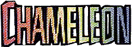
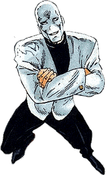
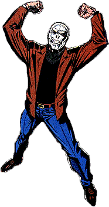
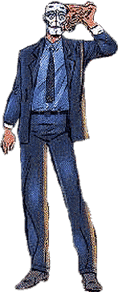
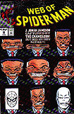

|
 |
Name: Dmitri Smerdyakov ID: Secret Relatives: Early Servant to Kraven to Hunter. Affiliates: Allies of Kraven the Hunter, The Leader, HYDRA, Hammerhead, Scorpion, Tarantula. Enemies: Spider-Man, Hulk, Daredevil, Captain America, Ironman. Powers: One of the greatest living Masters of Disguise, Quick-Change artist & Actor Supreme...Also a master at creating life-like masks, disguises, and make-up...His malleable flesh can assume the features of any person...Has used a hologram projector in his belt to aid him in further disguising capabilities. Origin: Very little is known about the man known as Dmitri Smerdyakov other than he was a Servant-Boy to Kraven the Hunter when young and had a somewhat strange relationship with him till Kraven took his own life many years later...The Chameleon took years trying to gain Kraven's respect in the form of crime after following him to America from East Europe. |
|
1st
App.: Amazing
Spider-Man #1 Origin
Issues: Amazing
Spider-Man #1 & 389...Chapter One
#2 Spider-Man
Appearances:
Amazing Spider-Man #1, 15, 80, 186, 307, 340-343 (In
Disguise), 375, 388, 389, 394 & 403 (Cameo)...Spectacular
Spider-Man #154, 165, 211 & 241-245...Web Of Spider-Man
#51-55, 64, 65, 112 & 117...Spider-Man
#45...Webspinners #10 & 11...Marvel Team-Up
#27...Sensational Spider-Man '96...Chapter One #2
& 9...Get Kraven #1 Other Appearances: Tales To Astonish #62, 63 (Cameo), 66 (Cameo)...Tales Of Suspense #58...Incredible Hulk #154...Daredevil #134...Captain America: Sentinel Of Liberty #5 & 6...Thunderbolts '97 Annual (Cameo) |
 |
|  |  Spider-Man Fear Rating: 6 (out of 10) |